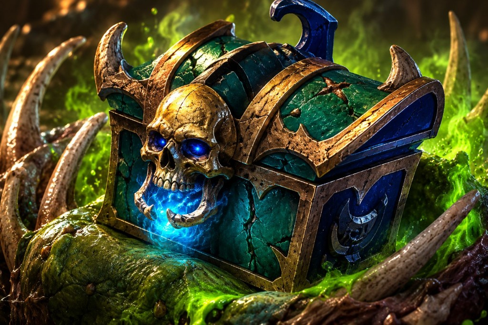

Doomsday Point Intervals
As Doomsday's points fall from 50M toward 0, a chest drops each time remaining points cross the lower boundary of an interval (~7.143M wide).

Chest 1 42.857MEach chest icon marks the exact drop point—the attack that pushes remaining points below that boundary earns the chest.
Overview
Doomsday is a kingdom Epic Monster with 50,000,000 Doomsday Points and 7 chest rewards. Like other Epic Monsters that use chest drops, those rewards are not random: they are tied to fixed point thresholds as the monster's health is reduced.
Each chest is awarded to the attack that causes remaining points to cross the lower boundary of an interval. The seven intervals are equal in size—roughly 7.143 million points each—so knowing where those boundaries fall lets your alliance plan who hits when and who claims each chest.
The sections below walk through the chest drop formula, the exact Doomsday thresholds, and how to coordinate attacks around them.
How Chest Drops Work
Each Epic Monster has:
- A fixed number of Chest Drops
- A fixed number of Monster Points (displayed when selecting the monster on the world map)
To determine when a chest will drop:
- Identify the monster's total point value.
- Identify the number of available chests.
- Divide the total points by the number of chests.
Points Per Chest = Total Monster Points ÷ Number of Chests
A chest is awarded whenever an attack causes the monster's remaining points to cross one of these thresholds.
In other words, chest drops occur at the lower end of each interval.
Doomsday Example
The Doomsday Epic Monster has:
- 50,000,000 Doomsday Points
- 7 Chests
Step 1: Calculate Points Per Chest
50,000,000 ÷ 7 = 7,142,857.14
Each chest interval is therefore approximately 7.143 million points.
Step 2: Determine Chest Thresholds
Chest drops occur when the monster's remaining points cross the following values:
| Chest | Remaining Points Threshold |
|---|---|
| 1 | 42.857M |
| 2 | 35.714M |
| 3 | 28.571M |
| 4 | 21.428M |
| 5 | 14.285M |
| 6 | 7.142M |
| 7 | 0 (Monster Defeated) |
Example
Suppose Doomsday currently has 44M points remaining.
An attack deals 2M damage, reducing the monster to 42M points remaining.
Because the attack crossed the 42.857M threshold, that attack receives the chest associated with that threshold.
The chest is awarded to the attack that causes the crossing, not necessarily the largest attack or the final attack.
General Calculation Method
For any Epic Monster with chest drops:
Threshold Interval = Total Points ÷ Number of Chests
Then calculate:
Threshold 1 = Total Points − Interval
Threshold 2 = Total Points − (2 × Interval)
Threshold 3 = Total Points − (3 × Interval)
…
Threshold N = 0
Whenever an attack causes the monster's remaining points to pass one of these thresholds, that attack earns the corresponding chest.
Practical Strategy
When coordinating alliance attacks:
- Calculate all chest thresholds before attacking.
- Track the monster's current remaining points.
- Estimate expected damage from each participant.
- Time attacks so desired players cross specific thresholds.
- Be especially careful near threshold values, as even a small attack can claim a chest.
For high-value Epic Monsters, coordinated attacks can ensure that chest rewards are distributed intentionally rather than randomly.
Summary
The Chest Drop mechanic is based on evenly dividing an Epic Monster's total point value by its number of available chests.
For any Epic Monster:
Chest Interval = Total Points ÷ Number of Chests
A chest is awarded whenever an attack causes the monster's remaining points to cross one of the resulting thresholds. Using this method, players can accurately predict chest drops and coordinate attacks to maximize alliance rewards.